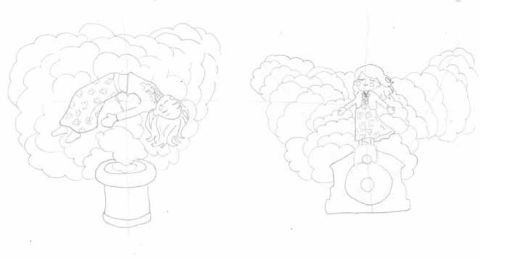
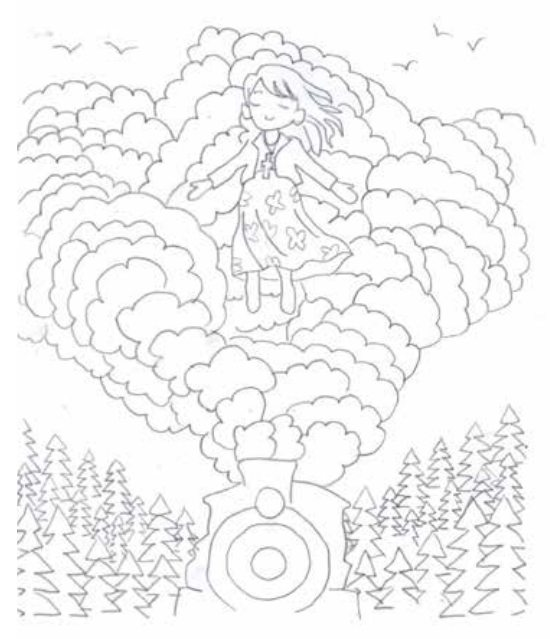

Ander Spoor: The freedom to choose your own path!
What if a song could inspire you to spread your wings and follow your own direction? ;)
Inspired by “Ander Spoor” by Karen Damen, I created a symbolic illustration that explores freedom, personal choices and life's unexpected journeys. Through visual metaphors, meaningful colour choices and expressive composition, I transformed the song's message into a visual story that goes beyond its lyrics.
- Role
- Graphic designer & illustrator
- Artist
- Karen Damen
- Project
- Fan art – Ander Spoor (school assignment)
- Tools
- Paper, watercolours, wax crayons, Adobe Illustrator
More than just fan art!
What if an illustration could make your favourite artist feel truly understood? ;)
For this assignment, I was challenged to create fan art inspired by a song from an artist I genuinely admire. I chose “Ander Spoor” by Karen Damen.
But this wasn't about simply illustrating the lyrics! The challenge was to explore the artist's world and discover the emotions, atmosphere and deeper meaning behind the music.
The final artwork had to be a vertical Instagram post (1080 × 1350 px), combining my own illustration style with strong visual storytelling and composition.
The goal? To create an illustration that offers a fresh perspective on the song and makes the artist feel truly understood.
And who knows? Maybe Karen herself would notice my work! ;)
My approach
Choosing a different path!
For my fan art, I chose “Een Ander Spoor” by Karen Damen, a song that explores the difficult choices we make in life and the paths we leave behind.
What fascinated me most was the deeper meaning behind the song: every decision opens one door while closing another.
I wanted to explore this emotional message rather than simply illustrate the lyrics. My focus was on translating the feeling of doubt, change and choosing your own direction into a meaningful visual story.
The challenge? To create an illustration that captures the emotions behind Karen's music while adding my own creative perspective.
Because sometimes, the most meaningful stories are found between the lines! ;)
Exploring different directions!
What if the steam of a train could take you anywhere you wanted to go? ;)
For my main illustration, I drew Karen Damen in her iconic album outfit, using the rising steam of a train as a metaphor for choosing your own path in life.
I experimented with two different compositions:
- Left illustration: Karen floats on the steam, letting herself be carried towards an unknown destination.
- Right illustration: Karen stands on the steam as it pushes her upwards, symbolising the freedom to choose her own direction.
I eventually chose the right illustration because it communicated my concept more clearly. Her standing position also gave me more creative freedom to explore different emotions and interpretations as I developed the illustration further.
Both sketches reflect the idea that life doesn't always have to follow a predetermined track.
The idea? Sometimes, the best direction is the one you choose for yourself, even if you don't know where it will lead! ;)

Bringing the journey to life!
What if a train journey could symbolise the freedom to follow your own dreams? ;)
To bring my illustration to life, I added birds and trees, creating the feeling that the train is actually moving through the landscape towards its next destination.
I also shaped the rising steam into a pair of wings, symbolising freedom, independence and the courage to choose your own path.
These details helped me strengthen the visual storytelling without directly illustrating the song's lyrics. Every element contributes to the feeling of movement, possibility and an unknown destination.
The message? Spread your wings, follow your own track and see where life takes you! ;)

Colour palette
The freedom to move forward!
How can colours capture the feeling of freedom and the courage to keep moving forward? ;)
For my illustration, I chose light blue, dark blue and orange, each with its own symbolic meaning.
- Light blue: Represents freedom, calmness and the confidence to follow your own path.
- Dark blue: Adds depth and contrast to the composition, while reinforcing the feeling of trust and self-confidence.
- Orange: Symbolises the inner fire, passion and determination to keep moving forward, even when the destination is unknown.
By combining calming shades of blue with the warmth and energy of orange, I wanted to create a visual balance between the freedom to explore and the motivation to keep going.
The idea? A little calm, a little courage and a fire inside that keeps you moving forward! ;)
My creative process
Bringing it to life by hand!
Why create everything digitally when you can bring an illustration to life by hand?
For this project, I chose to create every element by hand, starting with pencil sketches on paper.
Once I was happy with my drawings, I outlined them and added colour using wax crayons and watercolours.
By combining these traditional techniques, I wanted to create a personal, handmade look, with playful textures and a unique illustrative character.
The result? An illustration where every pencil line, brushstroke and crayon texture adds a little piece of personality! ;)